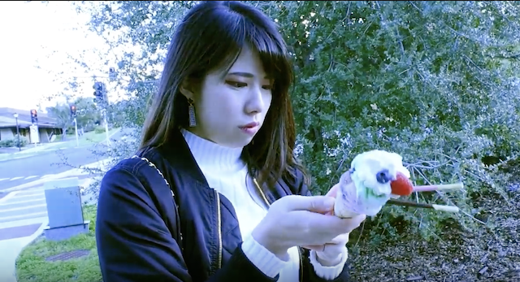
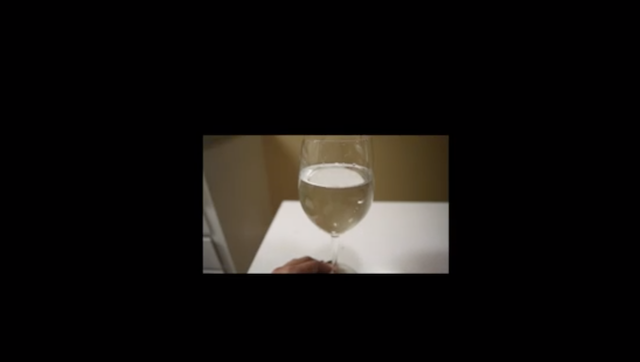
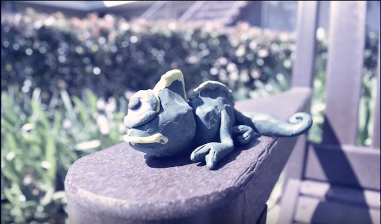

Artist Statement
My name is Mona. Studying Digital Media Art at San Jose State University. I made pencil/charcoal drawing most until I started learning art in college and university, but I became interested in more digital art such as net art, shooting videos, and making games since I enrolled in SJSU. I love creating abstract art with sound. My goal until I graduate is to make the abstract art with sound and show about the life I experienced.
My goal as an artist is to make many kinds of videos to make people have fun. It sounds too simple, but it's difficult as well. When I have a hard time, art exists all over the world helped me to keep alive. So, I want to be a part of it this time.
──────────────────────────────────────────────────────────────────────────────────────────
These are videos I created as class projects through Spring semster 2019. you can click the image to watch the videos.

"#wasted", video, 2019
It is all about social media addiction. I use Instagram as everyone does, but am sometimes worried about people who only cares the photos. They want to take a photo of food with good quality, but don't care its taste. They want to take self portrait like model, but don't care people around them even though they bother. People are too much on their phone while they are sitting together at restaurant.
──────────────────────────────────────────────────────────────────────────────────────────

" "Shallow" with glass harp ", video, 2019
I played a song "Shallow" by using a glass harp. I shot each sound of glass and made it together. I changed some pitch because of limitation.
──────────────────────────────────────────────────────────────────────────────────────────

"Critical Interactivity", website, 2019
This page shoes how information spread online nowadays. If I click anywhere on the page, the circle increases. It means how the information spreads to a wide range and every person have choice to spread information.
２ ──────────────────────────────────────────────────────────────────────────────────────────

"You are not alone", video, 2019
I challenged making a stop motion animation video with oil clay figures.